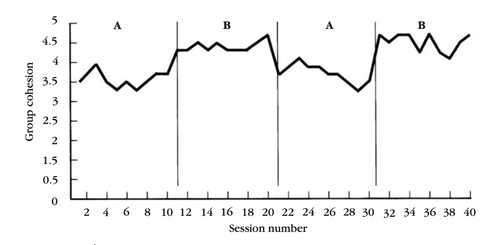

단일 피험자 설계 (15장)
상담연구방법론, by Heppner, P. P., Wampold, B. E., Owen, J., Thopso, M. N.
표본 크기 1의 풍부함으로부터 배우기
과거, 단일 사례를 주의 깊게 조사함으로써 다수의 사람들에게 적용되는 답을 구하려고 노력했으나,
방법론적 쟁점들은 오차 변량, 외재 변수, 수많은 타입의 편향들을 지적하며 비과적학적이라고 간주되는 지점까지 이르렀음.
1990-2001에서 상담 및 발달 저널(JCD)에 출판된 논문의 분석 결과 “단일 피험자 설계”는 1%(2개)에 불과.
저널의 편집장은
가치가 없다기 보다 단지 잘 사용되지 않는다. 교육학적 연구에 중점을 두는 패러다임이 상담자들에게 꼭 잘 맞는 것은 아니다.
Kazdin(2003)도
집단을 대상으로 얻은 결과가 개별 사례를 대상으로 한 결과보다 일반화 가능성이 반드시 더 높다고 할 수는 없다
단일 피험자 자료를 분석하는 다양한 종류의 기법과 통계분석이 늘어났고,
점차 단일 피험자 설계가 타당한 연구방법의 발전으로 그 결과가 인정받을 기회가 높아졌음.
“단일 피험자 설계”라는 이름은 느슨하게 넓은 범위를 포괄하고 있음: 일화적 관찰부터 엄격하고 치밀한 실험 설계까지.
책에서는 과학적 엄밀성과 타당성을 증대하는 방법에 초점을 맞춤.
단일 피험자 설계에 대한 역사적 조망
오래된 역사를 가지는데 광범위한 연대기에 대해서는 Barlow와 Hersen(1984)를 참고.
- Broca, Wundt, Parvlow, Skinner 등의 초기 연구자들은 소수의 개인들을 체계적으로 관찰함으로써 중요한 결과와 진보를 이름.
- 20세기 초반, 통계의 발명은 집단의 평균 비교라는 철학을 강조하게 됨
- Ronald Fisher가 농학자라는 사실에 영향을 받은 것이 아닌가 추정.
- 특정한 비료, 재배 환경 등이 주어졌을 때, 평균적으로 더 나은 농작물을 생산하는 데 관심이 있었음.
- 1900년대 초, 정신의학, 상담, 임상심리학에서 감정/행동 문제를 탐색하기 위한 주된 방법론은 “개인 사례 연구”였음.
- Breuer와 Freud(1895)의 “Anna O.” 사례 연구는 “과학적” 관측의 기반을 형성했고, 점차 성격과 심리치료 이론으로 발전.
- 하지만, 방법론적 관점에서 엄격히 통제되지 않았으며,
- 치료자들은 보통 비판적 사고의 과학적 방법이 훈련된 사람이 아니었고, 초기 연구들로부터 근본적으로 잘못된 추론을 했음.
- 1940~1950년대에, 비통제적 사례 연구의 부적절함을 인식하고, 세련된 방법론적 발전과 함께, 변수를 조작하고, 집단간 비교, Fisher의 통계 분석론을 수용함.
- 이는 Hans Eysenck의 작업에 큰 공이 있음.
- 치료분야가 치료의 효과성에 대해 설득력 있는 실증적 증거를 가지지 못함을 주장.
- 치료를 받든, 대기자에 있든 개선될 가능성은 거의 동일하다고 주장함.
- Paul(1967)은
- 치료 효과에 대한 총체적 측정은 “압도적인 복잡성”과 “수많은 혼입변수(confounding)”로 인해 적절하지 않다고 주장.
- “어떤 치료가, 누구에 의해 실시될 때, 특정한 문제를 가진 이 개인에게 어떤 상황하에게 가장 효과적인가?”를 탐구해야 한다고 주장.
- Kiesle(1966)도 내담자들이 서로 유사하다는 “획일성 미신”을 지적.
- 또한, 집단 비교가 내담자들 간의 중요한 차이를 드러내지 못하며, 특히 어떤 내담자는 더 악화된다는 것을 지적 (Truax & Carkhuff, 1967; Truax & Wargo, 1966).
- 이에 대한 반응으로 여러 방법론들이 제안되고 탐색되었음.
- 마치, 원점으로 돌아가, 개인에 연구로 회귀한 것으로 보임.
- 현재, 훨씬 더 많은 방법론적 성숙이 이루어졌고,
- 2005년, 미국심리학회에서는 소위 경험/실증 기반 치료(empirical-based practice)를 구성하는 요인에 대한 정책을 채택함.
- “증거 기반 사례 연구”(evidence-based case study)를 구체적으로 정의하기도 했음(p.365): 링크
비통제 사례 연구 대 “집중적” 단일 피험자 양적 설계
이후 단일 피험자 “실험” 설계와 비교
- 과거, 전형적 설계는 비통제 사례 연구였음.
- 비체계적, 비통제적 조건하에서, 종종 회고적으로 이루어진 관찰, 미리 계획되지 않은 관찰을 포함.
- 근래에 들어, 체계적, 집중적, 엄격한 조사를 진행
- 사례 연구보다 휠씬 더 체계적인 방식으로 수행
- 인지적, 행동적, 정서적 측면에서 복합평가를 포함.
- 반복적인, 다중 관찰로 구성.
- 명료하게 정의된 변수를 관찰
- 미리 계획된 관찰을 실시
- 과정과 성과에 대한 자료 수집
- 과학적 증거에 필수적인 비교를 포함
예를 들어, Gullestad & Wilberg(2011)에서 “집중적” 단일 피험자 양적 설계를 보면,
(많은 양의 자료, 다중 출처(내담자, 상담자, 평정자), 여러 시간대, 객과적/주관적 자료의 비교)
- 여러 장애 진단 기준을 충족하는 한 명의 내담자를 관찰.
- 18주에 걸친 치료와 장기 외래 치료를 포함함.
- 내담자의 자기보고,
- 내담자와 상담자들의 “척도”와 “반구조화 면접”을 통해, “과정 자료”, “결과 자료”를 측정
- 애착 유형, 성찰적 기능, 심리적 스트레스, 대인관계 기능을 평가하는데 사용됨.
- 내담자와 상담자 모두 치료 효과에 대한 주관적 인상을 보고함.
- 증상 체크리스트, 대인관계 문제에 대한 원형 척도, 종합 기능 평가로 구성
- 8, 18, 36, 54개월 시점에 반복적으로 수집
- 성찰적 기능과 스트레스의 연관성을 기술하기 위한 비교
- 성찰적 기능에 대한 치료 전 진술문과 3년 후 진술문을 비교
- 치료 과정에 걸처 나타난 증상의 변화
- 치료가 끝나는 시점에 내담자와 상담자들의 성찰 간의 비교
- 단일 사례부터 일반화 가능성이 불명확한 점은 여전히 남아 있고, 반복 검증 연구가 필요함.
단일 피험자 “실험” 설계
AB 설계, 중다 기저선 설계
공통적 특징
처치 목적의 구체화
- 조작적 조건화 패러다임에서 발전했기에, “표적 행동”이라는 구체적인 행동적 목표를 지님: 종속 변수
- 처치의 목적: 인지/정서적 반응, 행동, 생리적 반응, 성격 특질
- 시스템이 피험자가 된다면 (치료 집단, 가족, 조직 등), 체계의 특질이 처치의 목적: 예를 들어, 의사소통 양식, 단결/유대성(cohesion), 참여도(involvement)
종속변수에 대한 반복 측정
- 가령, 내담자의 자기비난 사고를 줄이고자 하는 연구에서
- 일주일 단위, 하루에 여러 번에 걸친 측정 등
처치 단계
- 여러 처치/개입이 반복적으로 시행: 독립 변수
- 기저선 단계: 처치 전 수집
- 기저선과 개입에 따른 변화를 관찰
기저선 자료의 안정성
- 개입의 인과적 추론을 하려면 기저선의 자료가 안정적/일관되어야 함.
AB 설계와 그 변형
AB 설계
A: 기저선 단계, B: 개입 단계
- 모든 단계가 여러 번의 다중 관찰로 이루어짐
- 기저선이 안정적인지를 확인
- 시간대별로 개입의 효과에 대한 철저한 평가가 가능
- 피험자 내 설계와 같은 구조
- 피험자가 자신의 통제로 작동
- 기저선이 비교군이 되어 효과의 추정이 가능
- 분석방식은 다양하게 제안되어 있으나, 현재는 다층 모형(multilevel model)을 활용
- 통계적 검증력이 보통 낮음: 가능한 많은 관찰을 수집하는 것이 유리
Irvine Yalom(2005) 연구: ‘돌아가며 주제 정하기(agenda-go-round)’
- 치료자가 집단 회기를 시작할 때, 각 구성원들에게 그 회기에서 다루고 싶은 자신을 위한 주제를 정하도록 요청
- 집단 단합력과 참여도를 향상시키는 효과가 있음을 검증.
- A단계(기저선): 첫 10회기
- B단계(처치): 이후 10회기 (‘돌아가며 주제 정하기’ 처치)
- 보통, 그래프처럼 확연히 나타나지 않음: 효과에 대한 불확실성 높음
- 또한, 역사(치료 과정)와 성숙의 위협이 존재함.
- 단순한, 사전-사후 설계보다는 견고함.
ABAB 설계 AB 설계의 확장
역전 설계(reverse design)이라고도 함: 기존 기저선으로 되돌아 가는 것을 포함.
- 가정: 개입이 제거되었을 때, 기저선 단계와 유사한 수준으로 회귀해야 함.
- 일종의 반복 검증: 인과적 추론을 더욱 강화
- 기저선으로 회귀하지 않는다면, 인과적 추론이 불가능.
- Yalom의 연구에 적용하다면,

3가지 문제점들
- 통계적 검정이 어려움.
- 이월 효과(carryover effect): \(B_1\)단계의 조작의 효과가 \(A_2\) 혹은 \(B_2\)에 영향을 미칠 수 있음.
- 명백히, 되돌릴 수 없는 효과들이 존재함: 예를 들어, 학습이나 기능을 습득한 경우
- 역전 가능하고, 이월 효과가 없는 개입들에 대해서만 적용 가능.
- 치료 단계를 역전하는 것이 바람직하지 않거나 비윤리적인 경우
- 무선적 단일 피험자 실험/무선 AB설계를 제안함.
- 그럼에도, 생각보다 더 넓은 주제에 대해 적용 가능하다고 믿음!
무선 AB 설계
- A단계와 B단계가 무선적으로 선택
- 무선적 추출의 원리를 이용해 전통적 통계적 추론을 적용할 수 있음.
- 최소한의 반복 개수를 정할 수 있음.
- 2 x 2 요인 설계를 이용해 이월 효과를 분석할 수 있음.
- A, B, C 혹은 그 이상의 단계를 포함할 수 있음.
중다 기저선 설계
- 2개 이상의 표적 행동을 동시에 측정
- 각각에 대해 기저선이 존재: 중다 기저선
- 개입은 각각 다른 시점에서 이루어짐
- 각 표적 행동에 대한 개입시에 다른 표적 행동에 대한 변화가 없어야 개입의 효과가 있음을 추론할 수 있음.
- AB설계가 변화를 “역전”해서 인과관계를 확인하는데 반해,
- 중다 기저선 설계는 일부의 표적 행동(개입)의 변화를 확인하여 인과관계를 추론.
- 문제점: 종속변수들간의 상관관계가 존재할 수 있음 -> 변화의 원인 추정이 어려움.
변형 1
동일한 개인에게서 2개 이상의 종속변수를 측정
예를 들어, 치료적 과제가 가족 내 의사소통의 양에 미치는 효과를 고찰하고자 할 때,
- 다음 두 종속변수를 측정
- 부모가 이야기하는데 보내는 시간: 일일 기록으로 측정
- 부모와 자녀가 이야기하는데 보내는 시간: 일일 기록으로 측정
- 다음 두 표적를 개입으로 설정
- 부부 간 의사소통을 증진시키도록 설계된 과제
- 부모와 자녀 간의 의사소통을 증진시키도록 설계된 과제
- 처음 기저선 평가 구간으로 시작해서,
- 각 표적이 서로의 통제 변수로 작용됨.
- 처음에는, 부부 간 과제를 시행하면서, 첫 번째 종속변수(부부간의 의사소통 시간)의 변화가 발생하지만, 두번째 종속변수(부모와 자녀 간의 의사소통 시간)의 변화는 없다면, 첫번째 개입의 효과가 존재함을 추론
- 다음으로, 부모-자녀 간 과제를 시행하면서, 두 번째 종속변수(부모와 자녀 간의 의사소통 시간)의 변화가 발생하지만, 첫번째 종속변수(부부간의 의사소통 시간)의 변화는 없다면, 두번째 개입의 효과가 존재함을 추론
- 즉, 개입이 표적이 아닌 행동에 있어서는 안정된 기저선이 유지된다는 것이 개입의 효과를 추론가능하게 해줌.
변형 2
다른 피험자에 대해 동일한 반응을 확인
예를 들어, Yalom의 “주제 정하기”의 집단치료 연구에서,
- 처음 기저선 평가 구간으로 시작해서,
- 한 번에 한 구성원만을 (주제 정하기를) 훈련시키고, 매 5번째 회기마다 다른 구성원을 훈련시킴.
- 훈련받지 않은 사람들에게서는 변화가 나타나지 않을 것으로 기대됨.
- 즉, 개입의 대상이 되지 않았을 때, 그들이 통제집단 역할을 하게 됨.
- 단, 훈련을 받지 않은 구성원들이 훈련을 받은 동료들을 관찰함으로서 오염이 될 수 있음.
변형 3
한 피험자에 대해, 여러 다른 환경에서 반응을 관찰
예를 들어, 한 어린이가 동급생들과 상호작용하는 데 대한 토큰 강화(행동 치료)의 효과를 조사한다면,
- 처음 기저선 평가 구간으로 시작해서, (오전, 오후)
- 방과 전과 방과 후에 대한 행동을 관찰
- 방과 전에만 친사회적 상호작용에 대한 토큰을 강화를 시작
- 오전에만 상호작용의 양에 변화가 나타나고,
- 오후에 다시 토큰 강화를 시작하면, 기저선에 따른 변화를 관찰할 수 있음.
중단 기저선 설계의 핵심은 다중 종속 변수들이 독립적이어야 한다는 것임.
- 한 종속변수만 변하고, 나머지는 변하지 않아야 한다는 가정.
- 그렇지 않다면, 역사나 성숙의 내적타당도의 위협이 될 수 있음.
- 기저선 행동들의 상관관계를 주의 깊게 살펴봄으로써 이러한 위협을 최소화할 수 있음.
- 또는 여러 기저선을 사용하여, 의존적인 기저선들을 배제할 수 없음.
Dennis와 Ellis(2003)의 연구
- 상담수련생들이 공감과 은유를 사용하는 능력을 향상시키는 (자기 수퍼비전) 훈련의 효과를 조사
- 수련생들은 세 조건에 배정: 모두 조건에서 기저선을 측정
- 처음에 은유 사용을 배우고, 그 다음에 공감 사용을 배우는 조건
- 처음에 공감 사용을 배우고, 그 다음에 은유 사용을 배우는 조건
- 주의만 기울이는 위약 통제 조건
- 은유의 사용을 늘리는데 도움이 되었으나, 공감의 증가를 가져오지 못했음.
단일 피험자 설계의 장점과 제한점
장점
치료 과정에 관한 정보 및 아이디어 수집과, 가설 생성의 수단
- 집단 평균치가 치료의 효과를 검토하는데 유용하지만, 개인 변량이 모호한 점이 있음.
- 치료 과정은 복잡하고 고도로 가변적이며,
- 내담자는 중요한 측면에서 서로 다름.
- 치료자 또한 마찬가지며, 심지어 때에 따라 다름.
- 따라서, 복잡하고 세부적인 과정의 치료라는 맥락에서 단일 피험자 설계는 미시적 분석에 적합함.
- 개별사례는 새로운 이론을 세우는데 기여하고, 희소한 현상을 잡아내는데 유용함.
- 치료 과정의 단면들을 심도 있게 면밀히 관찰할 수 있음.
치료기법의 검증의 수단
- 새로운 기법의 발견 및 검토
- 확립된 기법을 새로운 모집단 혹은 치료 상황에 적용
- 정립된 기법에 대한 심도 있는 검토
특히, 치료자는 내담자들과의 시행착오 과정을 통해 새로운 기법을 발견하고나 창안하곤 했음.
- Breuer의 “Anna O.”에 대한 치료 작업은 “말하기 치료” 혹은 정화감을 발견하는데 기여.
- George Kelley는 프로이드적인 해석에 불만을 갖고 ’통찰’과 ’비상식적 해석’을 허위로 구성하여 시도하면서, 개인들의 이러한 ’세계에 대한 대안적 구성’을 믿고 변화함을 관찰했음.
- Rogers는 문제가 있는 결혼생활에 대한 얘기를 시작하면서 다시 치료가 시작되며 치료 방향이 바뀐 실패를 경험하면서, 전통적인 지시적이고 진단 중심의 접근법을 포기하고, 내담자 중심의 접근법을 개발하게 됨.
개인의 희소 현상 탐구의 수단
- 피험자들이 집단으로 고찰되고 평균화되어 개인의 차이와 결과가 모호하게 됨.
- 단일 피험자 설계는 집중적이고 미시적 분석을 통해, 개인 내담자들의 개별성을 기술하는데 적합함.
- 또한, 개인에 대한 질적인 접근에 적합함: 개인의 사고체계 혹은 고등 정신 과정에 대한 자료를 수집하고 탐구할 수 있도록 함.
- 다중인격장애와 같은 희소한 현상을 연구할 수 있으며,
- 남성 식욕부진 환자나 고유한 상황적 스트레스에 처한 사람들(예: 9.11 이후 중동 학생들)과 같이 낮은 빈도로 발생하는 현상을 연구할 수 있음.
범례와 반례 제공의 수단
- 특정한 관점, 논점, 이론을 지지해주거나 반례가 될 자료를 제공
- 예를 들어, Strupp(1980)은 정신역동치료에서 성공적 사례와 성공적이지 못한 사례를 가진 치료자들을 비교.
- 치료의 효과성과 관련된 사건들을 검토
- 부정적 결과: 내담자의 기질적 문제, 상담의 역전이 문제와 관련
- 긍정적 결과: 내담자의 치료적 관계를 활용하는 능력, 내담자가 치료자의 체계 내에서 노력하는 능력과 관련
- 즉, 환자 변수가 매우 강력한 사건임을 제안했음.
제한점
- 전통적 사례 연구는 거의 실험통제가 결여됨
- 역사, 성숙, 검사(testing), 선택(selection), 사망와 같은 내적 타당도의 위협이 존재
- 치료자는 회상에 의존하기도 하여 다양한 왜곡과 편향이 존재
- 내담자의 자기보고 또한 요구특성(demand characteristics)에 의해 왜곡될 수 있음.
- 타당도를 알 수 없는 도구를 사용하기도 함.
- 앞서 논의한 두 유형의 단일 피험자 설계에서 전통적 사례 연구의 여러 문제를 수정했음.
- 보다 체계적인 관찰과 실험 통제를 수반.
- 여전히, 일반화 가능성에 대한 논란은 여전히 남아 있음
- 내담자 일반화 가능성: 다른 문제나 진단을 받은 내ㄷ마자들에게 적용 가능한가?
- 상황 일반화 가능성: 다른 상황에서도 적용 가능한가?
- 범례나 반례로 사용할 때는 주의를 요함.
- 실제 과거에는 비통제 사례 연구들이 범례로 과도하게 사용되었고,
- 성격이론 형성에 주요 자료로 사용되었음.
- 하지만, 적어도 반례의 경우, 기존 규칙에 예외가 있거나 타당하지 않을 가능성을 시사함.
- 연구자는 “찾고자 기대하는 것을 찾고”, “기대에 배치되는 정보는 간과”할 수 있음.